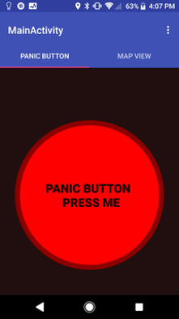

IITSecurity is an Android mobile application I built with my two class mates
Jose Casarrubios and Yael Torres in a mobile application development course. It aims
to improve security on campus by allowing students to call the campus' Public Safety at the push
of a button, as well as view previous incidents on a map to identify and avoid
danger zones. This app can be used by the Public Safety as well, allowing them to view
and respond to recent incidents, with the app providing them with the quickest route to
a student in trouble.

The first three images are screenshots of the user interface for the student side
of the application.
The first image shows a large panic button, which appears as soon as a student
opens the app, allowing them to quickly tap on the button when in an emergency, which
calls public safety. The victim's precise location is also sent to public safety, in
case a student is unable to communicate during an emergency.
Since accidental tapping of the button can occur, we have implemented a timer that
waits five seconds before calling public safety, allowing students to cancel the call
if needed, as shown in the second image.
The third image displays another functionality for the student side of the application
that allows users to view a map of where previous incidents have occurred. This could be
used to help a student plan a journey ahead of time, allowing them to avoid areas with
higher crime potential. The pins on the map are color-coded, indicating the type of incident
that occurred (robbery, assault, sexual assault, etc.).
These next three images are screenshots of the user interface for the public safety side of the application.
The first image shows the user the recent events that have occurred. These are events
that have recently occurred or are currently taking place. If an event was recently
attended to with details of the crime known, public safety can input data about the incident
by tapping the info circle on the right side of the event, which will shift the event from
the recent events list to the documented events list. If it is an event that is taking place,
public safety can quickly respond by tapping on the event, which brings them to the second image.
The second image shows up when the user has tapped on an event. They are then given
the quickest route on Google Maps to the victim's location.
The third image shows the documented events list, which is a list of events that have
occurred in the past. These are the events that appear on the map in the student side of the
application.
This is a working application and not just a designed wireframe. The only functionality
it currently lacks from being a usable app is the ability to call the authorities when the
panic button is tapped.
Carpet-Inn
Carpet-Inn is an Android mobile application that I developed and published for a local home decoration company. Following from the success of Carpet-Inn's website, the owner wanted to improve brand exposure by having a mobile application that could display the business' goods quickly and allow for users to browse through them seamlessly.
This project was a good way for me to further improve my knowledge in Android application development as I had to explore new concepts and implementations that could fulfill the design and performance expectations of potential clients.
The main purpose of the application was to fetch information from the company's website and display the rugs, along with their designs and sizes. When the application is first opened, there is a splash screen that displays a graphic for 3 seconds while loading the relevant html pages into a Jsoup document.
The main activity of the application had a view pager that displayed three tabs as shown in the first picture above. View pager is a relatively new class to promote material design so it was quite the challenge learning about the methods used in this class. A custom adapter was used to display the custom listview of rugs.
A dialog fragment was implemented as seen in the second picture that appears when a user clicks on a list item. In this fragment they are able to zoom in on the enlarged picture in order to observe the selected rug in more detail. The user can also share a link to the rug on the company website or contact the owner through multiple mediums regarding the selected rug.
A search function was later implemented in an update that would allow users to filter through the many rugs available.
The biggest challenge in this project was dealing with bitmaps (graphics) efficiently. Since the images fetched from the website were meant for PC viewing, the images had resolutions higher than needed for mobile phone screens, which caused "OutOfMemoryException"s. It took some time to figure out that these large images were causing the errors and coming up with a solution that involved a whole new understanding of application memory management.
I plan to continue maintaning this application, performing fixes and improvements when needed. I am currently working on developing this application for iOS devices.
MiesList
MiesList was a prototype I worked on with four other students in a course. We designed a concept and interface for an application that allows students in a campus to trade items with each other within that respective campus. This would be a service similar to Amazon, Craigslist, and Facebook Marketplace, except that it would be more convenient, safe, and affordable.
The first image displays the user interface of the main screen that shows up when a user opens the app. It displays featured items which are determined by an item's popularity, or it can display items that is on a student's course booklist, since we provide users the option to submit their list of courses and the application works in the background to determine the books needed for the courses provided. The main screen also contains a button that allows a student to quickly list and item for sale.
The second image shows the payment methods involved when buying an item. A student can choose to pay for an item by card or by electronic payment methods such as PayPal and Venmo. The buyer can also decide if they want the item delivered or if they want to schedule a meeting with the seller to collect the item. This is convenient since students are trading within campus.
The final image is a screenshot of the order tracking page that provides the buyer with the status of their order and a tracking number.
For more details about the idea of the application, click here to watch a video.